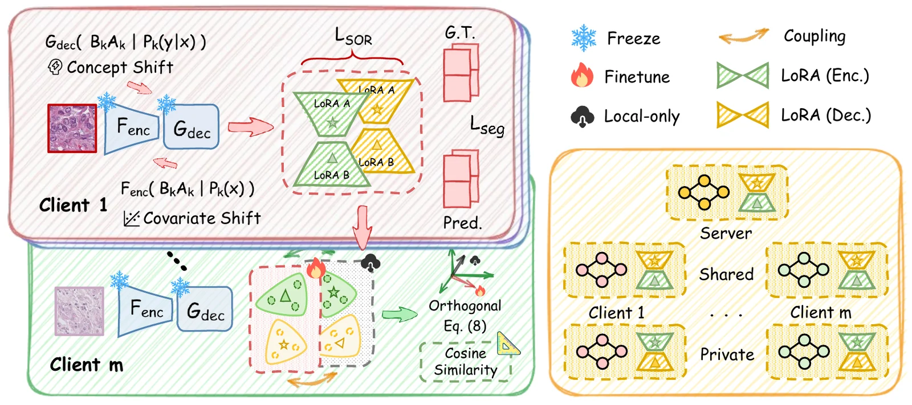
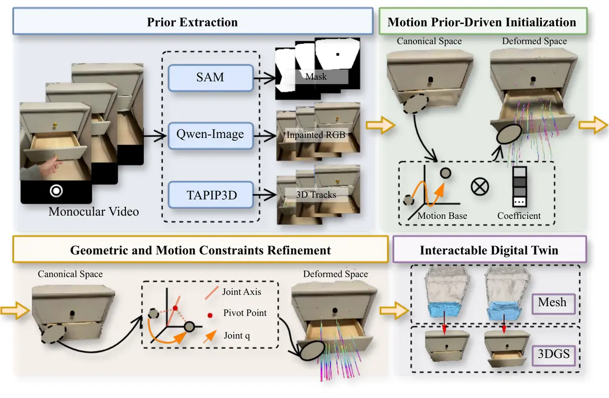
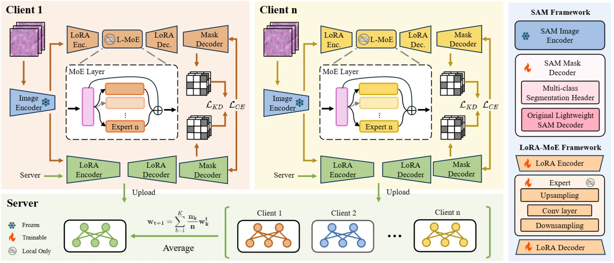
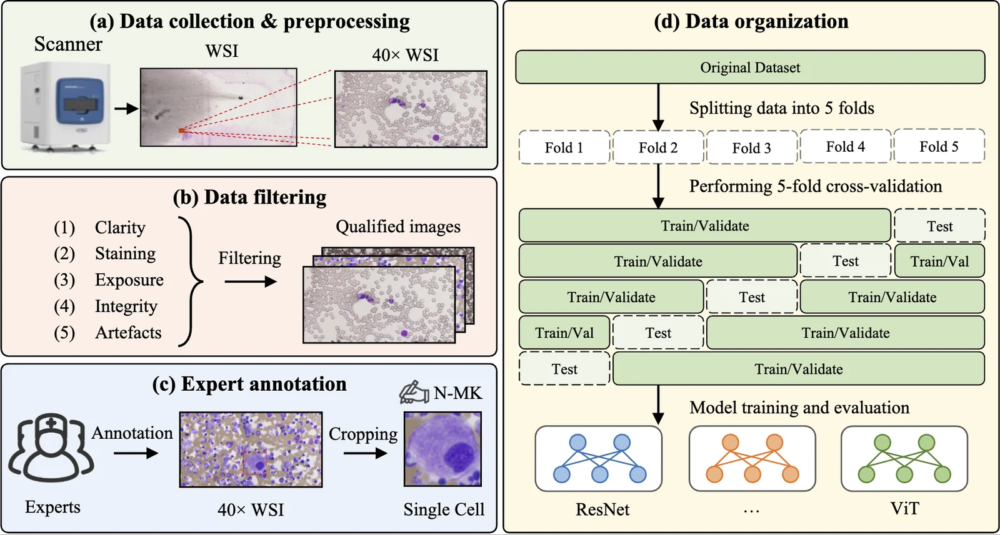
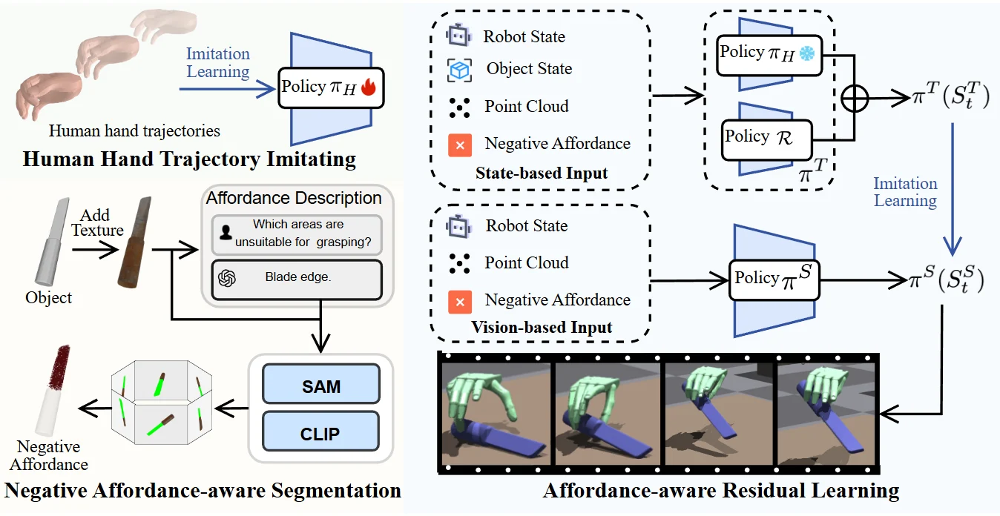
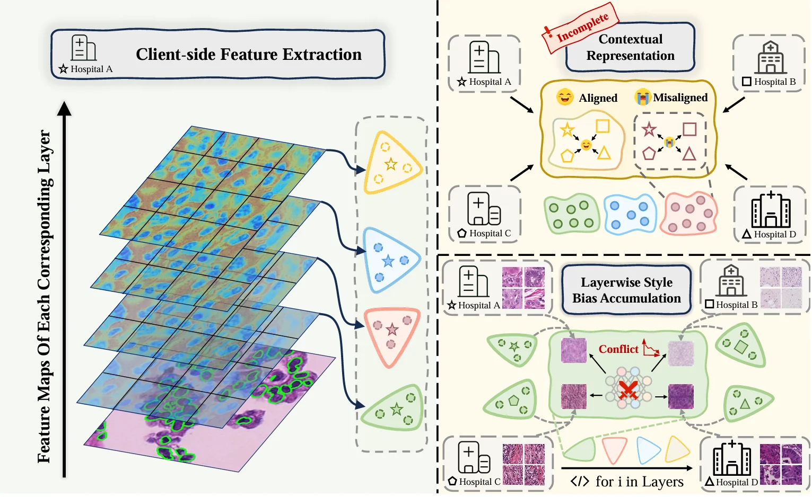
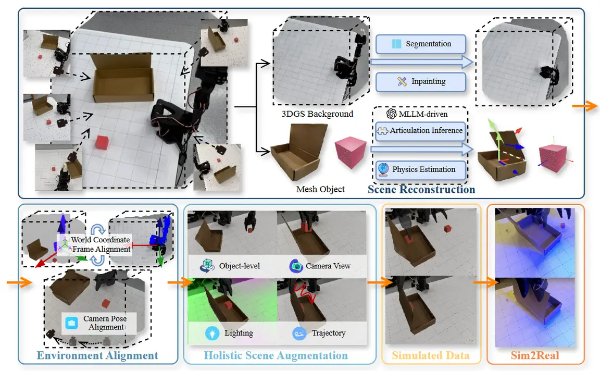
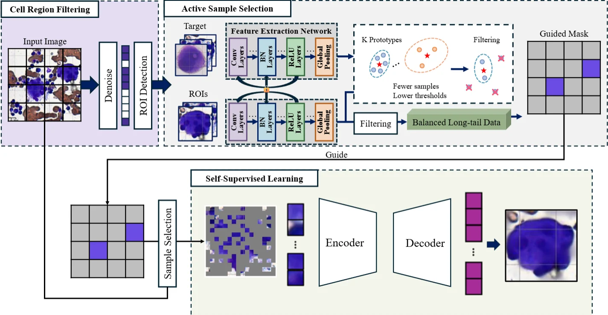

Medical AI and Embodied Intelligence
Linghao Zhuang
Research student at IBMS, CAMS & PUMC, advised by Prof. Yang Chen. Research intern at CASIA, working on multimodal large models.
ScrollCh. 01the researcher
About
I'm a research student at the Institute of Basic Medical Sciences (IBMS), Chinese Academy of Medical Sciences & Peking Union Medical College (CAMS/PUMC), advised by Prof. Yang Chen. I received my bachelor's degree in Software Engineering from Xinjiang University (XJU). My research interests span Medical AI and Embodied Intelligence.
Previously, I worked as a research intern at Xi'an Jiaotong University (XJTU), advised by Prof. Zhongyu Li, working with Xingyue Zhao and Prof. Zhiping Jiang (Xiangya Hospital, CSU); and at Wuhan University (WHU), working with Haoyu Zhao, in collaboration with Alibaba DAMO Academy. I am currently a research intern at the Institute of Automation, Chinese Academy of Sciences (CASIA), advised by Prof. Bo Xu, working on multimodal large models.
I'm open to collaboration—feel free to reach me by e-mail at S2026005030@student.pumc.edu.cn.
Ch. 02dispatches
News
One paper accepted by ECCV 2026.
One paper accepted by ICML 2026.
One paper accepted by IEEE RA-L.
One paper accepted by ICASSP 2026.
One paper accepted by Scientific Data.
Two papers accepted by AAAI 2026.
One paper accepted by IEEE EMBC 2025.
Won Bronze Medal at ACM-ICPC Asia Regional Contest.
Won Bronze Medal at CCPC National Regional Contest.
Won Gold Medal at CCPC National Invitational Contest.
Ch. 03selected, now showing
Publications
* Equal contribution · point at a paper to put its figure on the screen
-
01ICML 2026
Shift-Dependent Asymmetry: Orthogonal Inverse Low-Rank Adaptation for Federated Medical Segmentation
International Conference on Machine Learning, 2026 (CCF A)
Low-Rank Adaptation (LoRA) enables efficient federated fine-tuning of segmentation foundation models for medical imaging. However, most federated LoRA methods adopt a uniform aggregation rule, which breaks under the encoder-decoder asymmetry in medical segmentation: the encoder is dominated by appearance shifts, while the decoder is dominated by supervision variations. This mismatch entangles shared anatomy with site-specific biases and harms generalization. To address this, we propose Inverse Asymmetric Tuning (IAT). IAT aligns adaptation with heterogeneity sources by personalizing module-specific components in the encoder to absorb appearance shifts and in the decoder to accommodate site-dependent supervision, while retaining a shared pathway for transferable consensus. However, structural separation alone is insufficient under LoRA's bilinear parameterization, where multiplicative coupling can still cause site-specific updates to leak into the shared direction. We therefore introduce a Subspace Orthogonality Regularizer that penalizes shared-local collinearity in the effective update space, mitigating leakage without extra communication. Experiments show consistent improvements over strong federated LoRA and parameter-efficient FL baselines.

-
02ECCV 2026
Articulat3D: Reconstructing Articulated Digital Twins From Monocular Videos with Geometric and Motion Constraints
European Conference on Computer Vision, 2026 (CCF B)
Building high-fidelity digital twins of articulated objects from visual data remains a central challenge. Existing approaches depend on multi-view captures of the object in discrete, static states, which severely constrains their real-world scalability. In this paper, we introduce Articulat3D, a novel framework that constructs such digital twins from casually captured monocular videos by jointly enforcing explicit 3D geometric and motion constraints. We first propose Motion Prior-Driven Initialization, which leverages 3D point tracks to exploit the low-dimensional structure of articulated motion. By modeling scene dynamics with a compact set of motion bases, we facilitate soft decomposition of the scene into multiple rigidly moving groups. Building on this initialization, we introduce Geometric and Motion Constraints Refinement, which enforces physically plausible articulation through learnable kinematic primitives parameterized by a joint axis, a pivot point, and per-frame motion scalars, yielding reconstructions that are both geometrically accurate and temporally coherent. Extensive experiments demonstrate that Articulat3D achieves state-of-the-art performance on synthetic benchmarks and real-world casually captured monocular videos, significantly advancing the feasibility of digital twin creation under uncontrolled real-world conditions. Our project page is available at https://maxwell-zhao.github.io/Articulat3D/.

-
03ICASSP 2026
pFedSAM: Personalized Federated Learning of Segment Anything Model for Medical Image Segmentation
IEEE International Conference on Acoustics, Speech and Signal Processing, 2026 (CCF B)
Medical image segmentation is crucial for computer-aided diagnosis, yet privacy constraints hinder data sharing across institutions. Federated learning addresses this limitation, but existing approaches often rely on lightweight architectures that struggle with complex, heterogeneous data. Recently, the Segment Anything Model (SAM) has shown outstanding segmentation capabilities; however, its massive encoder poses significant challenges in federated settings. In this work, we present the first personalized federated SAM framework tailored for heterogeneous data scenarios in medical image segmentation. Our framework integrates two key innovations: (1) a personalized strategy that aggregates only the global parameters to capture cross-client commonalities while retaining the designed L-MoE (Localized Mixture-of-Experts) component to preserve domain-specific features; and (2) a decoupled global-local fine-tuning mechanism that leverages a teacher-student paradigm via knowledge distillation to bridge the gap between the global shared model and the personalized local models, thereby mitigating overgeneralization. Extensive experiments on two public datasets validate that our approach significantly improves segmentation performance, achieves robust cross-domain adaptation, and reduces communication overhead.

-
04Scientific Data
An Open Bone Marrow Megakaryocyte Dataset for Automated Morphologic Studies
Scientific Data (Nature Portfolio, JCR Q1, IF: 7.2)
Precise classification of megakaryocyte subtypes in bone marrow examination is crucial for the diagnosis and research of various hematological disorders, including Myelodysplastic Syndromes (MDS) and other platelet-production related diseases. While deep learning (DL) has demonstrated remarkable success in medical image classification, its application to megakaryocyte classification has been hindered by the scarcity of high-quality, openly licensed datasets. Therefore, we present MK-11, a dataset comprising 7,204 Wright-Giemsa stained single-cell images across 11 clinically relevant megakaryocyte subtypes. All images were annotated by two experienced hematopathologists with consensus review to ensure annotation quality, following standardized diagnostic criteria. Several state-of-the-art neural networks, including convolutional and transformer-based models, were evaluated on this benchmark, establishing strong baseline performance for megakaryocyte classification. To ensure reproducibility, we provide standardized five-fold cross-validation partitions along with all original images, annotations, partitioning schemes, and evaluation scripts under open licenses. In conclusion, this work presents the first public megakaryocyte subtype classification dataset for automatic morphological assessment development and evaluation, serving as a benchmark for future research.

-
05AAAI 2026
Towards Affordance-Aware Robotic Dexterous Grasping with Human-like Priors
AAAI Conference on Artificial Intelligence, 2026 (CCF A)
A dexterous hand capable of generalizable grasping objects is fundamental for the development of general-purpose embodied AI. However, previous methods focus narrowly on low-level grasp stability metrics, neglecting affordance-aware positioning and human-like poses which are crucial for downstream manipulation. To address these limitations, we propose AffordDex, a novel framework with two-stage training that learns a universal grasping policy with an inherent understanding of both motion priors and object affordances. In the first stage, a trajectory imitator is pre-trained on a large corpus of human hand motions to instill a strong prior for natural movement. In the second stage, a residual module is trained to adapt these general human-like motions to specific object instances. This refinement is critically guided by two components: our Negative Affordance-aware Segmentation (NAA) module, which identifies functionally inappropriate contact regions, and a privileged teacher-student distillation process that ensures the final vision-based policy is highly successful. Extensive experiments demonstrate that AffordDex not only achieves universal dexterous grasping but also remains remarkably human-like in posture and functionally appropriate in contact location. As a result, AffordDex significantly outperforms state-of-the-art baselines across seen objects, unseen instances, and even entirely novel categories.

-
06AAAI 2026
Divide, Conquer and Unite: Hierarchical Style-Recalibrated Prototype Alignment for Federated Medical Segmentation
AAAI Conference on Artificial Intelligence, 2026 (CCF A)
Federated learning enables multiple medical institutions to train a global model without sharing data, yet feature heterogeneity from diverse scanners or protocols remains a major challenge. Many existing works attempt to address this issue by leveraging model representations (e.g., mean feature vectors) to correct local training; however, they often face two key limitations: 1) Incomplete Contextual Representation Learning: Current approaches primarily focus on final-layer features, overlooking critical multi-level cues and thus diluting essential context for accurate segmentation. 2) Layerwise Style Bias Accumulation: Although utilizing representations can partially align global features, these methods neglect domain-specific biases within intermediate layers, allowing style discrepancies to build up and reduce model robustness. To address these challenges, we propose FedBCS to bridge feature representation gaps via domain-invariant contextual prototypes alignment. Specifically, we introduce a frequency-domain adaptive style recalibration into prototype construction that not only decouples content-style representations but also learns optimal style parameters, enabling more robust domain-invariant prototypes. Furthermore, we design a context-aware dual-level prototype alignment method that extracts domain-invariant prototypes from different layers of both encoder and decoder and fuses them with contextual information for finer-grained representation alignment. Extensive experiments on two public datasets demonstrate that our method exhibits remarkable performance.

-
07IEEE RA-L
High-Fidelity Simulated Data Generation for Real-World Zero-Shot Robotic Manipulation Learning with Gaussian Splatting
IEEE Robotics and Automation Letters (JCR Q2, IF: 5.3)
The scalability of robotic learning is fundamentally bottlenecked by the significant cost and labor of real-world data collection. While simulated data offers a scalable alternative, it often fails to generalize to the real world due to significant gaps in visual appearance, physical properties, and object interactions. To address this, we propose RoboSimGS, a novel Real2Sim2Real framework that converts multi-view real-world images into scalable, high-fidelity, and physically interactive simulation environments for robotic manipulation. Our approach reconstructs scenes using a hybrid representation: 3D Gaussian Splatting (3DGS) captures the photorealistic appearance of the environment, while mesh primitives for interactive objects ensure accurate physics simulation. Crucially, we pioneer the use of a Multi-modal Large Language Model (MLLM) to automate the creation of physically plausible, articulated assets. The MLLM analyzes visual data to infer not only physical properties (e.g., density, stiffness) but also complex kinematic structures (e.g., hinges, sliding rails) of objects. We demonstrate that policies trained entirely on data generated by RoboSimGS achieve successful zero-shot sim-to-real transfer across a diverse set of real-world manipulation tasks. Furthermore, data from RoboSimGS significantly enhances the performance and generalization capabilities of SOTA methods. Our results validate RoboSimGS as a powerful and scalable solution for bridging the sim-to-real gap.

-
08EMBC 2025
ActiveSSF: An Active-Learning-Guided Self-Supervised Framework for Long-Tailed Megakaryocyte Classification
IEEE Engineering in Medicine and Biology Conference, 2025
Precise classification of megakaryocytes is crucial for diagnosing myelodysplastic syndromes. Although self-supervised learning has shown promise in medical image analysis, its application to classifying megakaryocytes in stained slides faces three main challenges: (1) pervasive background noise that obscures cellular details, (2) a long-tailed distribution that limits data for rare subtypes, and (3) complex morphological variations leading to high intra-class variability. To address these issues, we propose the ActiveSSF framework, which integrates active learning with self-supervised pretraining. Specifically, our approach employs Gaussian filtering combined with K-means clustering and HSV analysis (augmented by clinical prior knowledge) for accurate region-of-interest extraction; an adaptive sample selection mechanism that dynamically adjusts similarity thresholds to mitigate class imbalance; and prototype clustering on labeled samples to overcome morphological complexity. Experimental results on clinical megakaryocyte datasets demonstrate that ActiveSSF not only achieves state-of-the-art performance but also significantly improves recognition accuracy for rare subtypes. Moreover, the integration of these advanced techniques further underscores the practical potential of ActiveSSF in clinical settings.

Ch. 04the credits
Experience
-
2025.08 — Present
Research Intern · Advisor: Prof. Bo Xu
Institute of Automation, Chinese Academy of Sciences
Working on multimodal large models for vision-language tasks.
-
2025.03 — 2025.09
Research Intern · Advisor: Prof. Hua Zou
Wuhan University & Alibaba DAMO Academy
Working on embodied intelligence and robotic manipulation.
-
2024.06 — 2024.11
Research Intern · Advisors: Prof. Zhongyu Li & Prof. Zhiping Jiang
Xi'an Jiaotong University & Xiangya Hospital
Self-supervised learning methods for medical image analysis.
Ch. 05the laurels
Awards
-
Gold Medal
CCPC National Invitational 2024 (Changchun)
-
Silver Medal
CCPC National Invitational 2024 (Shandong)
-
Bronze Medal
ACM-ICPC Asia Regional 2024
-
Bronze Medal
CCPC Regional Contest 2024
-
Gold Medal
ACM-ICPC Xinjiang Provincial 2024
-
First Prize
Math Modeling Provincial 2023
Fin.
I'm open to collaboration.
S2026005030@student.pumc.edu.cn